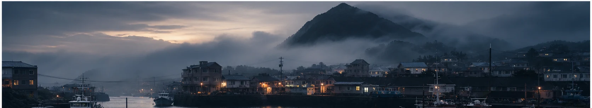
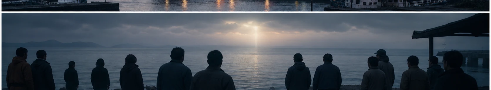
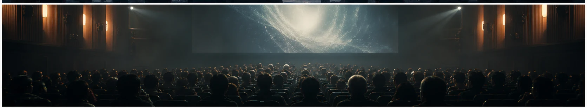

예매 60만 장의 신호, 영화 ‘호프’를 기다리는 이유
영화 ‘호프’가 개봉과 함께 높은 예매량으로 네이버 영화·연예 뉴스의 중심에 섰다. 개봉 전부터 국제영화제 진출과 감독의 신작이라는 점이 기대를 키웠고, 해안 마을을 둘러싼 미스터리라는 설정은 구체적인 정보를 많이 공개하지 않아도 강한 호기심을 만들었다. 관객은 줄거리를 확인하기보다 ‘극장에서 직접 체험해야 할 영화’라는 분위기에 반응하고 있다.
대형 기대작의 예매 숫자는 단순한 흥행 예측 이상의 의미를 갖는다. 첫 주 상영 시간표와 큰 화면 상영관이 빠르게 채워지면 온라인 대화도 활발해지고, 스포일러를 피하기 위해 개봉 초 관람을 선택하는 사람이 늘어난다. 불확실한 이야기를 먼저 확인하고 싶다는 심리가 다시 예매를 부르는 순환이 만들어진다.

‘호프’를 둘러싼 관심의 핵심은 장르의 결합이다. 작은 항구 마을의 생활감과 정체를 알 수 없는 존재에 대한 공포, 인물들의 선택을 따라가는 드라마가 함께 거론된다. 익숙한 괴물 영화의 속도보다 낯선 상황에서 공동체가 어떻게 흔들리는지를 지켜보는 작품이라면, 관객의 해석도 여러 갈래로 나뉠 가능성이 크다.
관람 전에는 정보를 너무 많이 찾지 않는 편이 오히려 좋을 수 있다. 예고편과 공식 시놉시스 정도로 분위기만 파악하고, 결말을 암시하는 후기 제목은 피하는 것이 안전하다. 반대로 강한 긴장감이나 음향에 민감하다면 관람 등급과 공식 안내, 스포일러 없는 강도 정보를 확인해 자신의 컨디션에 맞는 상영관을 고를 필요가 있다.
극장 선택도 경험을 바꾼다. 어두운 해안 풍경과 넓은 공간, 미세한 소리가 중요한 영화라면 화면 밝기와 음향 상태가 좋은 상영관이 유리하다. 다만 좌석 등급보다 중요한 것은 집중할 수 있는 시간이다. 러닝타임과 귀가 시간을 확인하고 휴대전화 알림을 꺼 두면 작품의 리듬을 온전히 따라갈 수 있다.

흥행 기대가 큰 작품일수록 첫날의 별점과 단정적인 평가에 휩쓸리기 쉽다. 그러나 미스터리 장르는 설명되지 않은 부분을 어떻게 받아들이는지에 따라 감상이 크게 달라진다. 관람 직후에는 결말을 서둘러 정답으로 만들기보다 기억에 남은 소리, 공간, 인물의 선택을 먼저 정리해 보는 것도 좋다. 다른 관객의 해석을 읽을 때는 사실로 확인된 장면과 추측을 구분해야 한다. 온라인에 후기를 남긴다면 제목과 첫 문단에서 결정적인 정보를 숨기는 배려가 필요하다. 영화가 마음에 들지 않았더라도 제작진이나 다른 관객을 공격하기보다 무엇이 기대와 달랐는지 구체적으로 쓰면 대화가 풍부해진다. 한 편의 화제작은 칭찬만이 아니라 서로 다른 해석이 안전하게 오갈 때 더 오래 살아남는다.
화제의 속도가 빠를수록 정보의 날짜와 출처를 확인하는 습관이 중요하다. 검색 결과의 제목만 보지 말고 공식 발표와 원문을 함께 살피며, 예고 단계의 내용과 확정된 사실을 구분해야 한다. 개인의 짧은 후기나 영상은 현장감을 주지만 전체 상황을 대표하지는 않는다. 서로 다른 관점을 비교하고 새 공지가 나오면 판단을 업데이트하자. 관심을 표현할 때도 당사자의 개인정보와 초상권, 아직 공개되지 않은 내용을 존중해야 한다. 빠르게 공유하는 것보다 정확하고 배려 있게 이해하는 태도가 결국 더 좋은 팬 문화와 공론장을 만든다.
한편 검색량이 높다는 사실이 곧 가치나 완성도를 뜻하는 것은 아니다. 화제가 시작된 배경과 사람들이 반응한 이유를 차분히 나누어 보면 유행을 더 입체적으로 읽을 수 있다. 서로 다른 취향과 경험을 존중하고, 확인되지 않은 내용을 단정하거나 과장된 표현으로 갈등을 키우지 않는 것도 중요하다. 오늘의 인기 키워드를 잠깐 소비하는 데서 그치지 않고 우리 생활과 문화에 어떤 변화를 남기는지 지켜볼 때 이야기는 더 풍성해진다.
높은 예매량이 작품의 최종 평가를 보장하지는 않는다. 개봉 뒤에는 기대와 실제 감상이 충돌하며 다양한 의견이 나올 것이다. 그 차이까지 포함해 극장 영화가 다시 공동의 화제가 되는 과정은 반갑다. 숫자보다 오래 남을 질문과 장면이 있는지, 관객 각자의 시선으로 확인할 시간이 시작됐다.